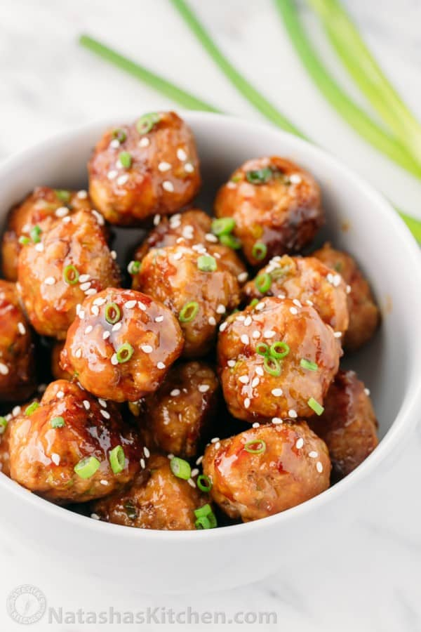
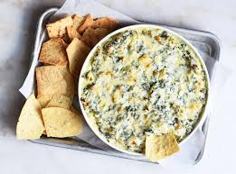

Fresh tomatoes, mozzarella, and basil drizzled with balsamic glaze.

These teriyaki pineapple meatballs appetizer changed so many times because of my family’s suggestions that it eventually became a main course.
Our favorite spinach artichoke dip recipe comes together quickly in a single bowl and bakes under a blanket of shredded cheese until it’s hot and bubbling.
